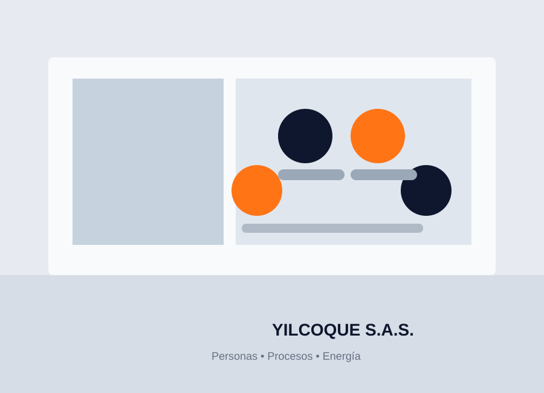

PORTAL DE INFORMACIÓN PARA COLABORADORES
Centro de Información
para Colaboradores
Un espacio para consultar de forma sencilla políticas, reglamentos, documentos y recursos importantes de YILCOQUE S.A.S.
Explorar documentaciónINFORMACIÓN PARA TODOS
Encuentra lo que necesitas
Consulta los documentos organizados por temas para facilitar su búsqueda.
TU INFORMACIÓN, SIEMPRE A LA MANO
Tus derechos son nuestra prioridad
Este portal reúne información de consulta para nuestros colaboradores y facilita el acceso a documentos institucionales, políticas y reglamentos.
Ver documentación
AYUDA Y CONTACTO
¿Necesitas ayuda?
Estamos disponibles para orientarte y atender tus inquietudes.